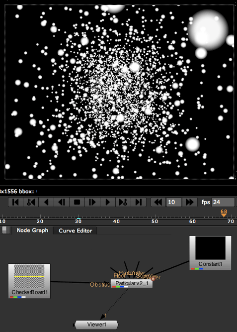

<!DOCTYPE html PUBLIC "-//W3C//DTD HTML 4.01 Transitional//EN">

<html>

	<head>
		<meta http-equiv="content-type" content="text/html;charset=iso-8859-1">
		<meta name="generator" content="Adobe GoLive">
		<title>Visibility tab&gt; Obscuration Layer group</title>
	    <link href="docs.verdana.default.css" rel="stylesheet" type="text/css"></head>
</html>
<html>
	<head>
	</head>

	<body bgcolor="#ffffff" class="bodystyle">
	<p class="h2_top">Visibility tab&gt; Obscuration Transform group </p>
	<p class="bodystyle">  Particular is applied to a 2D node but its  particles live in their own 3D&nbsp;world. This means other layers in the composition won't automatically obscure the particles. The Obscuration group provides a way to insert a 3D layer into the particles' world that will obscure the visibility of the particles. This functionality is especially useful if you are not using the <a href="gizmo.html">Particular 3D Gizmo</a> to place the particles in your scene.</p>
	<p class="bodystyle">&nbsp;</p>
	<p></p>
		<p><span class="caption">The Obscuration Transform group. </span></p>
		<p>&nbsp;</p>
		<p> </p>
		<p class="caption">Left to right, before and after Obscuration  is enabled. </p>
		<p class="bodystyle">&nbsp;</p>
		<p>&nbsp;</p>
		<p class="h2"><b>How Obscuration works </b></p>
		<p class="bodystyle">The Obscuration parameters work with  the <a href="inputports.html">Obstruction input port</a>.    Connect the Obstruction port to an RGB node like Constant or Checkerboard. When Obscuration is enabled, you don't see as many 3D particles because some particles are hidden to create a sense of depth.   </p>
		<p class="bodystyle">&nbsp;</p>
		<p class="bodystyle">&nbsp;</p>
		<p class="h2"><b>Position x, y, z</b></p>
		<p class="bodystyle">These controls move the position of the Obscuration node in Particular's 3D environment.  <a href="#options"></a></p>
		<p>&nbsp;</p>
		<p>&nbsp;</p>
		<p class="h2"><strong>Rotate x, y, z </strong></p>
		<p class="bodystyle">These controls rotate  the Obscuration node in Particular's 3D environment. </p>
		<p>&nbsp;</p>
	<p> </p>
	<p class="caption">At left, Obscuration is off. At right, Obscuration is on. </p>
	<p>&nbsp;</p>
	<p>&nbsp;</p>
	<p class="h2">Also Obscure With</p>
	<p class="bodystyle">You can have  more than one Obstruction object. </font>The Also Obscure With pop-up allows  other input ports to be used to obstruct the particles. The <a href="inputports.html">Layer Emitter, Wall and Floor ports</a> can  each be set up to obscure particles by choosing that  option. The Also Obscure With function works like a wall or floor would block items in the physical world.</p>
	<p>&nbsp;</p>
	<p><font face="Verdana, Arial, Helvetica, sans-serif"></font></p>
	<p>&nbsp;</p>
	<p class="bodystyle"><strong>Note: </strong>The Wall and Floor options work with the Wall and Floor modes in the Physics tab&gt; <a href="physics_bounce.html">Bounce group</a>. </p>
	<p class="bodystyle"><strong>Note:</strong> To make Also Obscure With work, you need to pay attention to how you composite your  image nodes. Use a  node that places Particular 'over' the Obscuration node.</p>
	<p>&nbsp;</p>
	</body>
</html>
